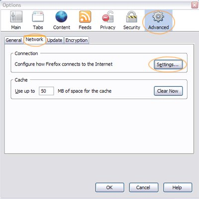
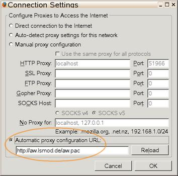
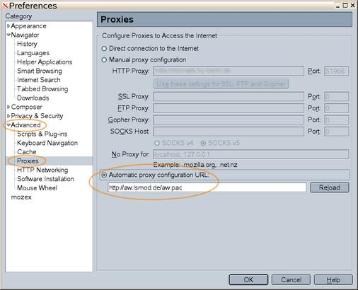
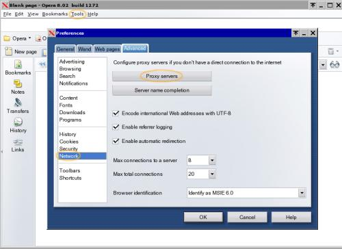
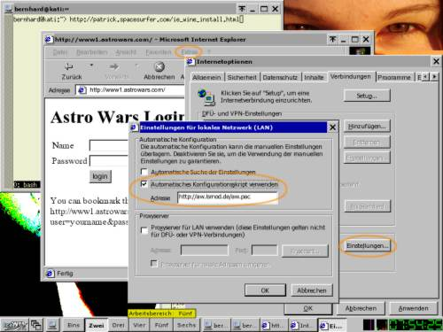

Proxy Configuration Guide
This guide shows in a few pics how to use proxy auto-configuration (.pac) files with various browsers.
If you download the .pac file to use it from your HD, you need to specify it with a file:// URL, e.g. file://C:\brownie.pac or file:///home/user/brownie.pac
firefox:


mozilla:

NOTE: advanced mozilla / firefox users can also open the special "about:config" URL and change 2 values:
network.proxy.type = 2
network.proxy.autoconfig_url = http://aw.lsmod.de/brownie.pac
Opera:

Internet Explorer:

Safari
http://www.lib.ucdavis.edu/ul/services/connect/setup/step1/safari.php